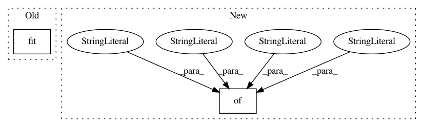

502d6ebfcd698061cbdc1b369cb7ff449ff9db08,tests/unit/test_estimator.py,,test_init_with_source_dir_s3,#Any#Any#,330
Before Change
sagemaker_session=sagemaker_session,
train_instance_count=INSTANCE_COUNT, train_instance_type=INSTANCE_TYPE,
enable_cloudwatch_metrics=False)
fw.fit("s3://{}".format(uri))
expected_hyperparameters = BASE_HP.copy()
expected_hyperparameters["sagemaker_enable_cloudwatch_metrics"] = "false"
expected_hyperparameters["sagemaker_container_log_level"] = str(logging.INFO)
After Change
enable_cloudwatch_metrics=False)
fw._prepare_for_training()
expected_hyperparameters = {
"sagemaker_program": SCRIPT_NAME,
"sagemaker_job_name": JOB_NAME,
"sagemaker_enable_cloudwatch_metrics": False,
"sagemaker_container_log_level": logging.INFO,
"sagemaker_submit_directory": "s3://location",
"sagemaker_region": "us-west-2",
}
assert fw._hyperparameters == expected_hyperparameters
// _TrainingJob "utils"
In pattern: SUPERPATTERN
Frequency: 3
Non-data size: 2
Instances
Project Name: aws/sagemaker-python-sdk
Commit Name: 502d6ebfcd698061cbdc1b369cb7ff449ff9db08
Time: 2018-06-04
Author: 6631887+laurenyu@users.noreply.github.com
File Name: tests/unit/test_estimator.py
Class Name:
Method Name: test_init_with_source_dir_s3
Project Name: tensorflow/lattice
Commit Name: 04a318d89806e0aaa645c2e261dfd93d0ed200bc
Time: 2021-02-16
Author: no-reply@google.com
File Name: tensorflow_lattice/python/kronecker_factored_lattice_test.py
Class Name: KroneckerFactoredLatticeTest
Method Name: testSavingLoadingScale
Project Name: bambinos/bambi
Commit Name: f7bc62ca710f2433273c437be40241f133af2cf4
Time: 2016-08-25
Author: jake.a.westfall@gmail.com
File Name: bambi/models.py
Class Name: Model
Method Name: build